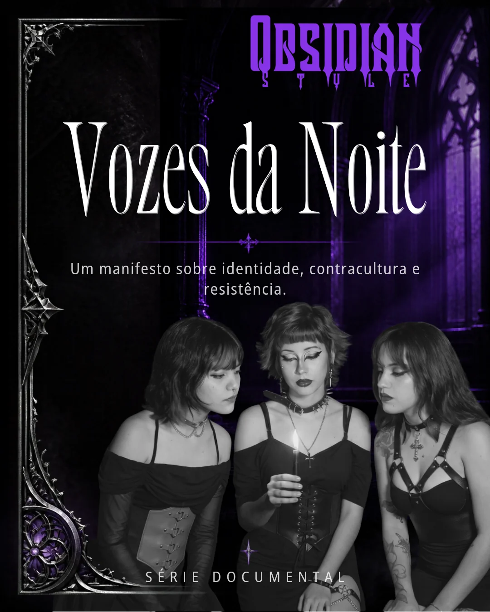

Identidade
O que é ser alternativo?
Um ponto de partida para conversar sobre pertencimento.
Além do visual. Além dos rótulos.
Um espaço para conhecer a cultura alternativa por quem a vive. Histórias, referências e diferentes formas de expressão que desafiam estereótipos e ampliam olhares.
Música, arte, comportamento e modos de expressão. A cena alternativa não cabe em uma única definição.
Um ponto de partida para conversar sobre pertencimento.
Referências culturais e possibilidades de expressão.
Por que ouvir as pessoas antes de julgar a aparência?
As chamadas são demonstrativas e serão substituídas por textos aprovados pela equipe editorial.

Uma narrativa que parte das vivências da comunidade alternativa e chega a reflexões sobre identidade, preconceito e pertencimento.
Descubra os episódios →Não se trata apenas de ser diferente. Trata-se de ter liberdade para ser quem você é.
Noctivivium: onde identidades, histórias e expressões encontram espaço para existir.
Acompanhe os episódios, os conteúdos e as novidades do projeto.